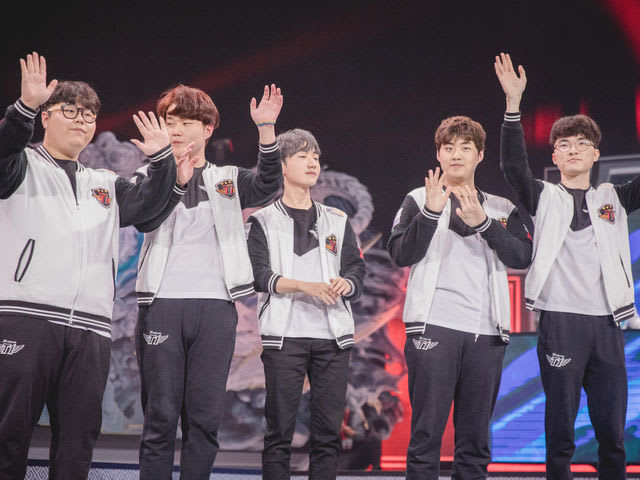

SK telecom

SK telecom

SK Telecom T1, commonly abbreviated as SKT, is a professional gaming team of the South Korean telecommunications company SK Telecom. SKT's League of Legends team is considered the world's best and have won the 2013, 2015, and 2016 League of Legends World Championships. The team has also won over 20 League of Legends tournaments including the 2015 and 2016 Mid-Season Invitational, the 2012 and 2016 IEM (Intel Extreme Masters)- World Championships, the 2015, 2016, and 2017 LCK (League of Legends Champions Korea) Spring Playoffs, the 2015 LCK Summer Split and Playoffs, All-Star Los Angeles 2015, and many more.